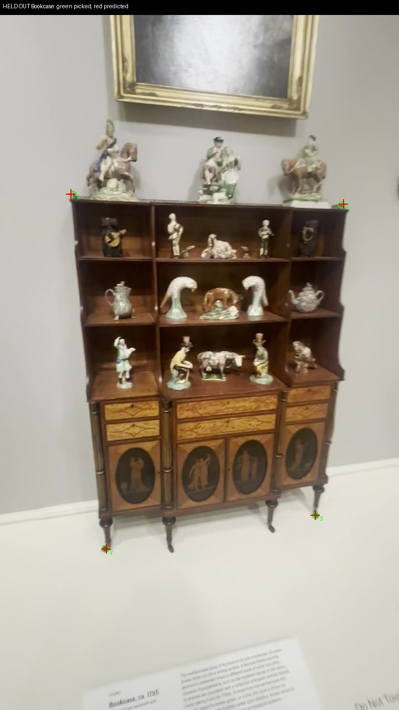
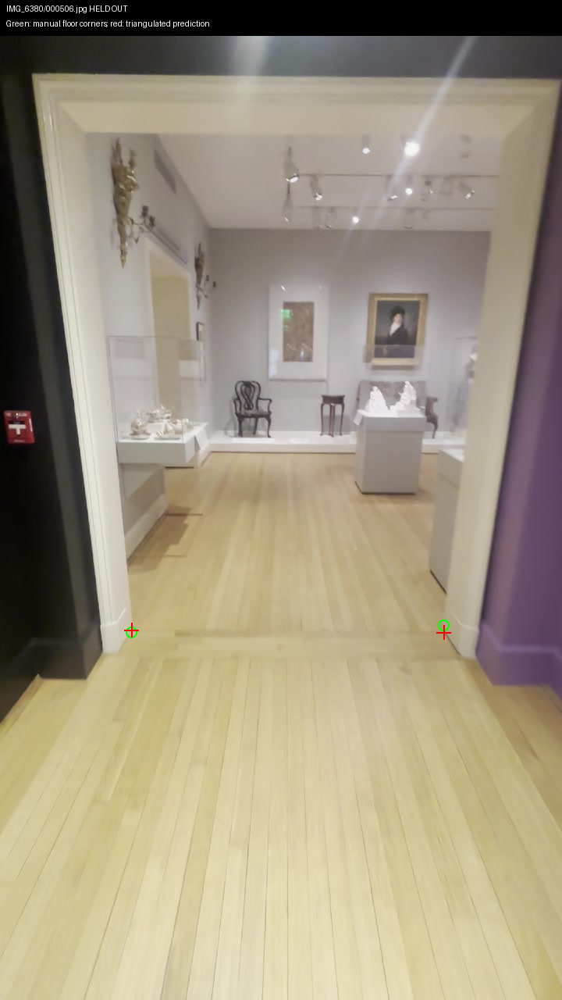
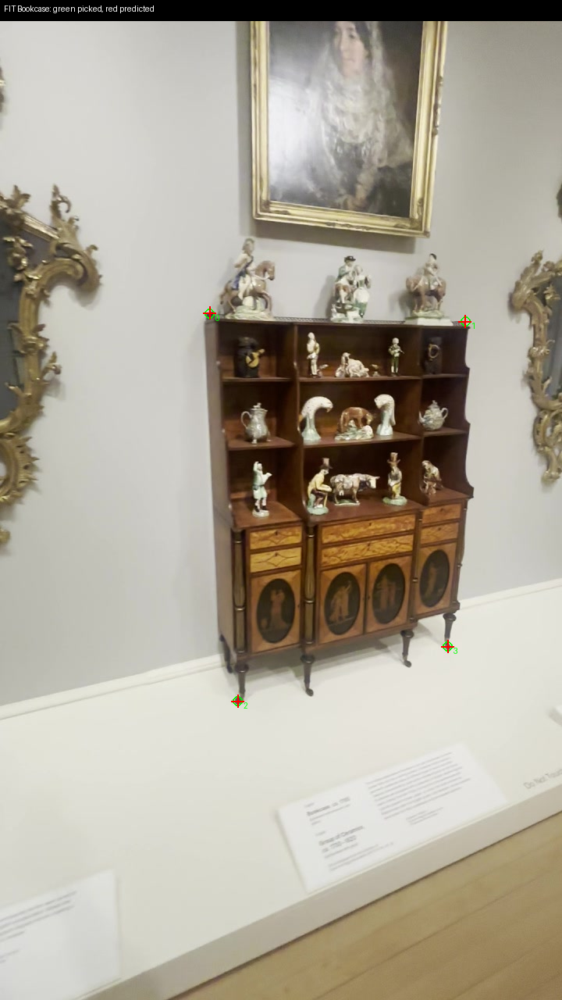
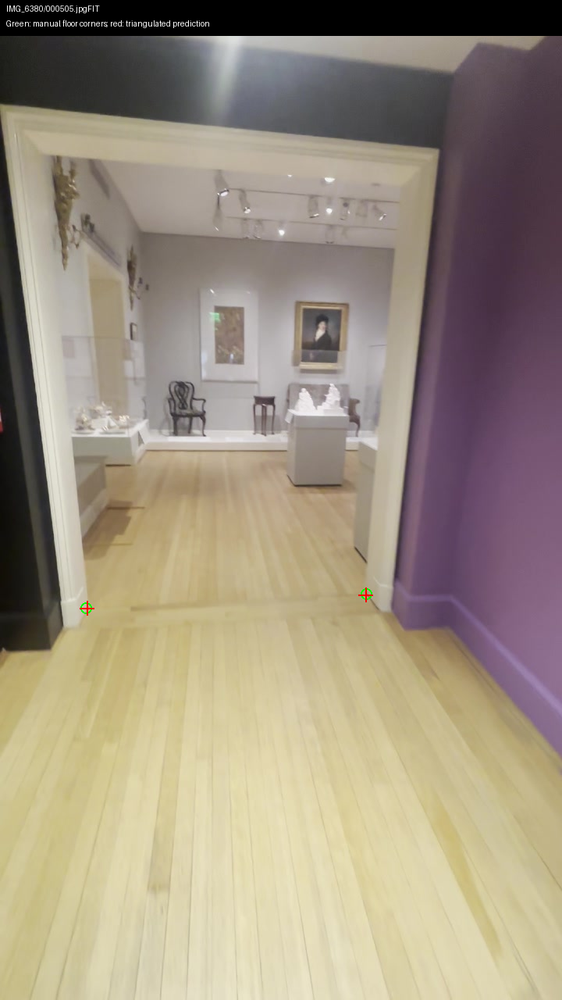
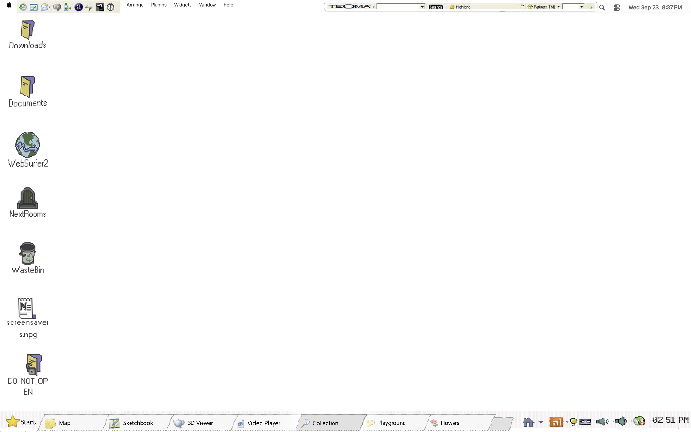

September 29, 2026, 21:00 UTC heartbeat. This is measurement evidence, not a playable connected map.
Bookcase scale cross-check passes its pixel diagnostic; doorway right corner still fails. Green circles are manual source-pixel picks; red crosses are predictions. Scale remains provisional. No runtime, 3D Viewer or paid-generation changes.


| Measurement | Result | Limit |
|---|---|---|
| Bookcase width / height scale | 2.631 / 2.585 metres per model unit; 1.76% apart | Same object, uncertain exact catalogue extrema and vertical; not an independent metric anchor |
| Doorway opening width | 1.851 provisional metres | 3-pixel pick perturbations give 1.760–1.955 m (10th–90th percentile); not a confidence interval |
| Doorway floor discrepancy | 1.8 / 7.4 provisional cm | Compared with previous depth floor; this does not certify that floor |
| Navigation / collisions | Not accepted | Height, walls, floor coverage, camera and browser walk remain |


Nearby video frames share underlying reconstructed geometry. These diagnostics do not establish independent capture accuracy, final dimensions, topology or owner acceptance.
Repository checks passed with the existing eight ObjectDB leak warning. Shell playtest failed six checks: white-page appearance, click tint timing, dip timing, tenant fill, grey-page appearance and resize fill. Runtime and frozen tests were unchanged. Synthetic triangulation recovery and displaced-annotation negative control passed.

Doorway measurements · Bookcase measurements · Sources, hashes and zero-spend provenance · Repository checks · Shell failures
Next: distinguish the right inner jamb toe from its bevel/shadow in additional source views, reserve fresh validation pixels, then measure doorway height and the two floor patches before constructing collision surfaces. Keep the failed trial. No paid retry or production integration.